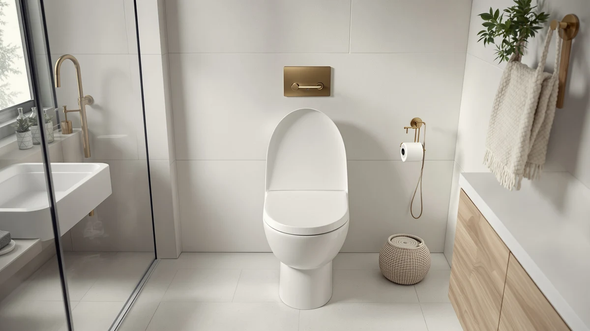

How to Remove Rusted Toilet Seat Bolts (When They Won't Budge)
Prices and picks verified as of August 2026. Independent, reader-supported reviews.


Things to Know Before You Buy
- Rust forms fastest on the metal bolts hidden under plastic caps, since trapped moisture cannot evaporate the way it does on exposed hardware.
- Penetrating oil needs at least ten minutes of contact time to break down rust; spraying it and immediately cranking a wrench rarely works.
- If a bolt head spins freely but the seat still will not lift, the nut underneath has corroded shut, not the bolt itself.
- A hacksaw blade, a screwdriver, and a can of penetrating oil handle most rusted toilet seat bolts for under $15.
Knowing how to remove rusted toilet seat bolts saves you from wrestling with a wobbly seat for weeks while you wait for a handyman. Corrosion builds up fast in a bathroom, where humidity and cleaning chemicals attack the plastic caps and metal fasteners hidden under your seat hinges. With about 45 minutes and a few household tools, you can free even bolts that look permanently fused to the bowl.
This guide walks through the sequence that works for most seized bolts: soaking, leverage, and, if needed, cutting the bolt out entirely. We also cover what to do when the nut breaks or the seat itself is too worn to save, plus a few replacement seats below in case a fresh start turns out to be the simpler fix.
What You'll Need
- Supplies: penetrating oil, replacement toilet seat bolts and nuts, and a few clean rags
- Tools: an adjustable wrench, a flathead screwdriver, and a hacksaw or oscillating multi-tool
Step 1: Clear Your Workspace and Inspect the Bolts
Start by lifting the seat away from the bowl and popping open the small plastic caps that hide the hinge bolts. Wipe the area with a dry rag so you can see how much corrosion you are dealing with before reaching for any tools. Some rusted toilet seat bolts only look bad on the surface and turn with light hand pressure, while others have seized completely inside the nut.
Reach underneath the bowl rim and try turning the bolt head with your fingers first. If it spins freely but the seat still will not come loose, the nut on the underside is the corroded half, not the bolt itself. Knowing which side is stuck tells you where to focus the next two steps, so do not skip this check even if you are eager to grab the wrench.
Step 2: Soak the Bolts in Penetrating Oil
Rust forms a solid layer between the threads of the bolt and the nut, and no amount of muscle breaks that bond on its own with stubborn, rusted toilet seat bolts. Spray a dedicated penetrating oil, not a general-purpose lubricant, directly onto the visible threads above the seat and onto the nut below the bowl. Products built specifically to dissolve rust work faster than an all-purpose spray.
Give the oil time to creep into the threads. Ten minutes is a reasonable minimum, but bolts that have been rusting for years benefit from a second application and a thirty-minute wait. While it soaks, lay an old towel under the bowl to catch drips, since some formulas leave a stain on grout if left to sit.
Step 3: Loosen the Nut While Holding the Bolt Steady
With the oil still working, wedge a flathead screwdriver into the slot on top of the bolt to keep it from spinning, then fit an adjustable wrench around the nut underneath and turn it counterclockwise. Steady, even pressure works better than short, sharp jerks, which tend to strip the screwdriver slot instead of moving the rusted toilet seat bolts.
If the nut turns even a fraction of an inch, stop and add a bit more oil before continuing. That small movement breaks the rust seal and usually means the rest of the bolt backs out by hand. If nothing moves after two or three solid attempts, do not force it further. Stripped or sheared bolts are harder to remove than intact ones, so move on to cutting instead of risking that outcome.
Step 4: Cut Through Bolts That Won't Turn
When a bolt will not budge after soaking and leverage, cutting it is faster and safer than continuing to fight it with a wrench. Slide a hacksaw blade, or better, an oscillating multi-tool fitted with a metal-cutting blade, into the narrow gap between the hinge and the porcelain. Cut straight through the bolt shaft, keeping the blade flat against the bowl to avoid chipping the glaze.
Work in short strokes and check your progress every few passes rather than sawing continuously, since the blade heats up quickly in that tight space. Once the shaft separates, the hinge lifts free and the leftover piece usually pulls out with pliers. Cutting handles almost any rusted toilet seat bolt that hand tools alone can't loosen.
Step 5: Clean the Mounting Holes and Attach New Hardware
With the old bolts out, scrape the mounting holes clean with a small flathead screwdriver or a stiff brush to remove leftover rust flakes and old washer fragments. A clean hole matters because new bolts need flat, debris-free contact with the bowl to seat properly and stay tight.
Thread in the new bolts and nuts, hand-tightening first and then giving each side a final quarter turn with the wrench once the seat sits level. Avoid overtightening, which can crack the porcelain or the seat's mounting posts. If the old seat is cracked, yellowed, or loose at the hinge regardless of the bolts, this is also the point where replacing the whole seat costs less time than continuing to nurse old, rusted toilet seat bolts along.
Common Mistakes to Avoid
The most common mistake is skipping the soak time. Spraying penetrating oil and immediately cranking on the wrench wastes the product and often strips the bolt head before the rust has any chance to loosen. Give the oil at least ten minutes, longer for bolts that have clearly been corroding for years.
Another frequent error is applying force to the top bolt without holding the nut steady underneath. Because rust often locks the bolt and nut together as one solid piece, turning only the top half spins the whole assembly in place without loosening anything. Work both ends together, either by holding one side still or by cutting through the shaft entirely.
Some people also reach for pliers on the bolt head instead of a proper screwdriver. Pliers round off the slot fast, and once that happens you lose your grip entirely and end up cutting the bolt anyway. Use the right tool from the start.
Finally, do not use heat sources like a lighter or torch near a toilet bowl. Porcelain cracks under sudden temperature changes, and nearby plastic seat components can melt or ignite. Penetrating oil and mechanical leverage handle rusted toilet seat bolts safely without that risk. If a bolt still will not release after a careful, patient attempt, cutting it out is simply the next step. It does not mean you did anything wrong.
Our Top Picks
If your seat cracked during removal or the bolts stripped beyond repair, replacing the whole unit is often quicker than sourcing matching hardware separately. We compared current toilet seats by material, hinge design, and verified owner ratings to narrow down three solid replacements for once you are done dealing with rusted toilet seat bolts.

Editor's Pick
Clorox Round Beveled Plastic Toilet
A round plastic seat with a beveled edge and stainless steel hinges that resist the same corrosion that likely rusted your original bolts. Reviewers note it installs in minutes with standard top-tightening hardware.
$24.99
Check Price on Amazon
Best Value
Clorox Elongated Wood Toilet Seat
A wood-core elongated seat that owners describe as sturdy and quiet to close, with rust-resistant hardware included in the box so you are not stuck sourcing bolts separately.
$29.99
Check Price on Amazon
Premium Choice
Clorox Elongated Plastic Toilet Seat
An elongated plastic seat with an easy-clean coating and adjustable hinges, useful if the mounting holes ended up slightly uneven after cutting out the old bolts.
$26.99
Check Price on AmazonFrequently Asked Questions
Yes, in most cases. Penetrating oil combined with a screwdriver and wrench frees the majority of stuck bolts within thirty minutes. Reach for a hacksaw or oscillating tool only when the bolt still refuses to turn after two or three soaked attempts.
Grip the remaining stub with needle-nose pliers or locking pliers and turn it counterclockwise. If nothing remains to grip, drill a small pilot hole into the center of the stub and back it out with an easy-out extractor, then clean the hole before installing a new bolt.
Standard WD-40 loosens light surface rust, but a dedicated penetrating oil, such as PB Blaster or Liquid Wrench, breaks down heavier corrosion faster and holds up better on bolts that have been rusting for years. Either option beats attempting to force a dry, seized bolt.
Choose stainless steel or brass hardware instead of standard plated steel, since those materials resist bathroom humidity far longer. A light coat of petroleum jelly or anti-seize compound on the threads before installation also keeps moisture from bonding the metal together over time.
Replacement bolts cost a few dollars, so they are the cheaper fix when the seat itself is still in good shape. But if the seat is cracked, stained, or the hinges are worn loose, a full replacement seat in the $12 to $30 range often solves both problems at once and saves you a second repair down the road.
Verdict
Removing rusted toilet seat bolts comes down to patience more than strength. Soak the threads in penetrating oil, give it real time to work, and use a screwdriver and wrench together instead of cranking on one side alone. That combination frees the vast majority of stuck bolts within half an hour, without any cutting.
When a bolt still refuses to turn, a hacksaw blade or oscillating tool finishes the job in a couple of minutes without damaging the bowl. And if the seat itself cracked or wore out during the process, a straightforward swap like the Clorox Round Beveled Plastic Toilet seat gets you back to a stable seat with corrosion-resistant hardware already included, so you will not be back here fighting the same rust in another two years.
Whichever route you take, working through the steps in order (inspect, soak, loosen, cut if needed, and reinstall) keeps you from stripping hardware or cracking porcelain along the way.